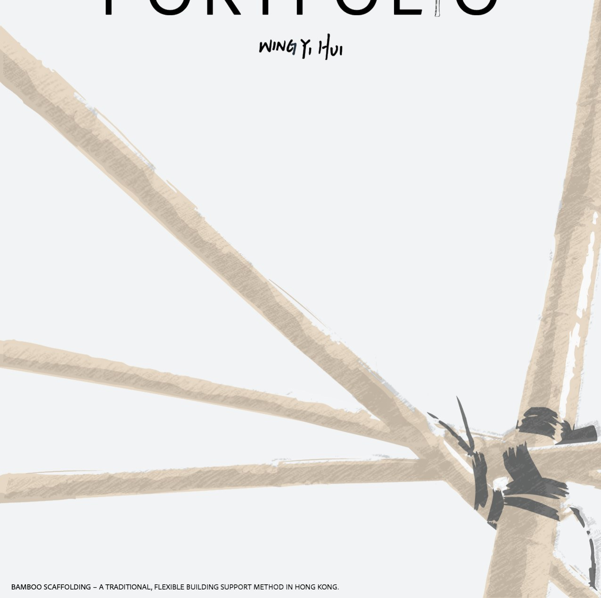
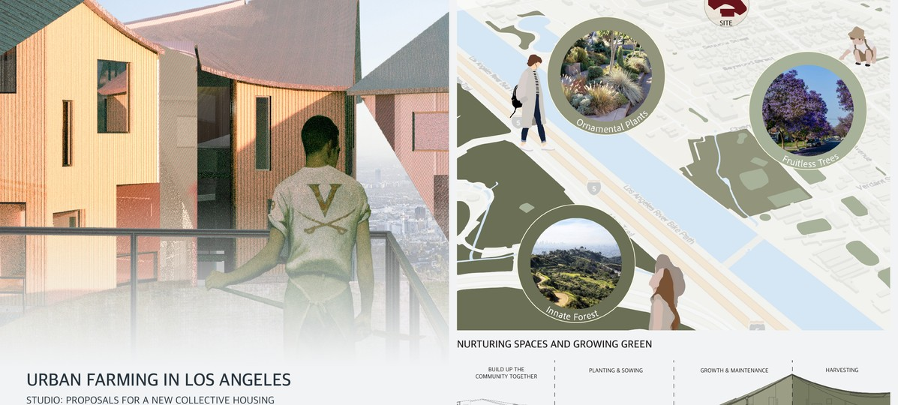
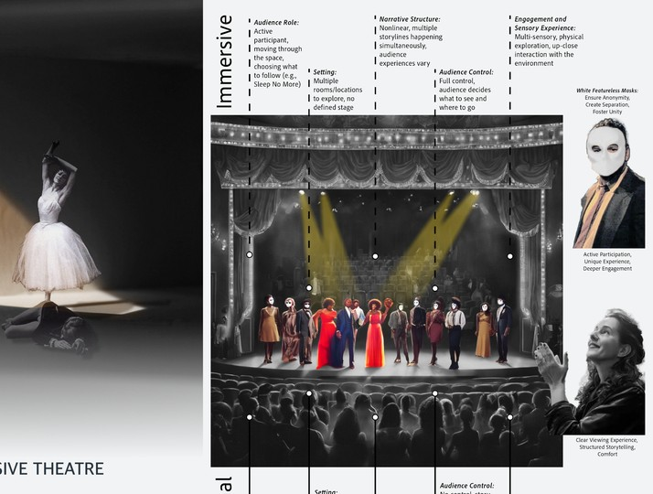
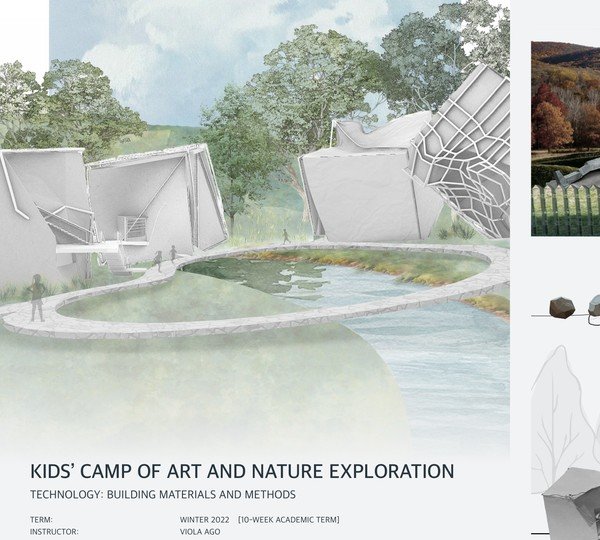
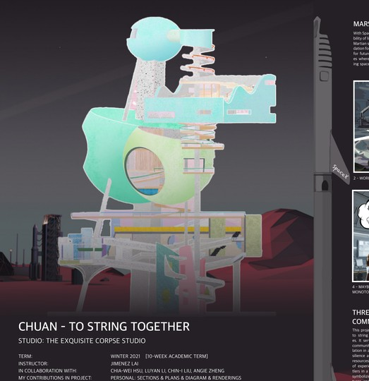

WingYi Hui
Architecture Portfolio
Architecture student working across collective housing, material studies, spatial storytelling, and community focused design.
Urban Farming in Los Angeles
A collective housing proposal that reconnects urban living with food systems, green infrastructure, and community.

Twist and Twine
An immersive theatre concept that reimagines the audience experience through spatial narrative and emotional engagement.

Kids’ Camp of Art and Nature Exploration
A nature integrated art camp that sparks curiosity and creativity through exploration, play, and making.

Chuan
A speculative Mars settlement exploring collective habitat, cultural continuity, and the architecture of connection in isolation.

WingYi Hui is a Master of Architecture Candidate at the University of Toronto with a background in Architecture Studies from UCLA. Her work explores sustainable, human centred design, adaptive reuse, community engagement, material studies, and spatial storytelling.
This website is a first GitHub Pages version designed to be easy to update. Project pages can be expanded with more drawings, writing, model photographs, and process images over time.